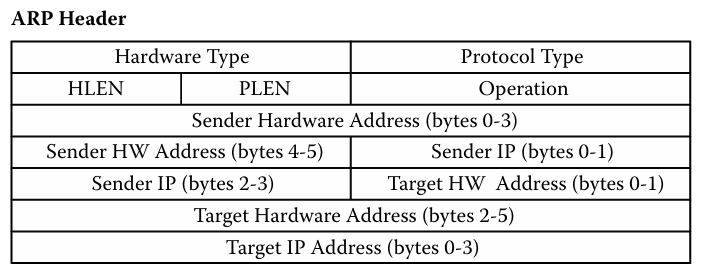

The second layer in the TCP/IP model is the Network Layer. The network layer is primarily responsible for providing
multiple networks to be connected. This layer also enables any capable device to connect to these given network systems.
You can think of the network layer almost like the interstate of the internet.
IP Addressing
You have probably heard of the concept of IP addresses before. Virtually everything you have that is connected
to the internet has an IP address, including the neurolink chip that might become everyone's future. These handy little
addresses are designed to be globally unique. So if you decide to perform any stunt with your devices that is considered harmful or
illegal, you can never hide.
More discussion will be held on this topic a little further down. One of the
biggest vulnerabilities to an IP address is IP spoofing. What is IP spoofing you may ask...great question.
IP spoofing is a technique to fake the source IP of data packets masking their true origin. How does an
adversary do this? Well first off, an attacker generates an IP packet through either specialized tools
or sniffing methods. The attacker alters the packet source IP and replaces it with a random or trusted one.
The packet is then sent as a normal packet to its destination, which in turn identifies the packet as coming
from a reputable source. The attacker uses the spoofed network access to either perform other forms of attack or
to just straight up brick the victim's device.
Routing
The question now becomes, how does a device enable its messages to be sent over the network. There's the IP address
which uniquely identifies the device on the network and the physical address that identifies the device on the outside world.
These two things, however, share no relationship, which is where a route table comes to save the day.
IP Packet Format
Minor IP Protocols
Address Resolution Protocol (ARP)
ARP packet layout

ARP Requests, Replies, and the Route Table
When a user wants to send a piece of data, such as picture, to another device...their device doesn't just
send it with a snap of their fingers. This brings routing back into the picture along with a route table.
What is a route table you may ask...a route table is where your device stores the IPs of known devices that it
has interacted with. When you hit send the picture to another device, your device looks in its route table.
If the address of the receiving device is not in the route table, but a networked device that will get the packet to the
other device is, then your device will send the packet to that device. This is called hopping or the next hop. This
continues until the packet reaches its destination. Now, what if the next device is not in the route table and your
device is never interacted with it before? That is where ARP request/broadcast packets get sent out. Your device or
the device that is already in your route table will send out these packets to a potential destination, if the next hop
is unknown. Once the correct (theoretically correct) device receives the request, the device will then send an
ARP reply back to the device that emitted the ARP request packet. Once the device that sent out the ARP request,
receives the ARP reply, the IP address both devices will be stored in either route table (device that sent out
ARP request will be stored in unknown device's route table and vice versa). There is a certain vulnerability with
this process, however it will be mentioned later on in this page.
Internet Control Messaging Protocol (ICMP)
ICMP packet layout
ICMP Echo Requests and Replies
Similar to ARP requests and replies, ICMP Echo requests and replies are also utilized during packet
exchanges. When a user's device has the IP of the next hop in its routing table, the device will use an
ICMP echo request, instead of an ARP request. Reason being is, again the address is already in the
route table, but the device that is sending the packet is also ensuring that its next hop is on and running.
If the next hop is active, then it'll send a reply to the device sending the packet. If it is not active,
then the device will have to echo another device or send out broadcast packets. Guess what....attackers
use the echo request packet to check if a given device is active, so that they act in malicious ways to the
device. More discussion will be held in the vulnerabilities section.
Network Layer Vulnerabilities
Header Vulnerabilities
The main header vulnerability deals IPs endpoint fields. What's an endpoint field, you may ask?
Endpoint fields are the parts of the IP header packet that are viewed while the packet is not in transit. These fields are
the following...length, id, flags, offset, protocol, and source IP address. These specific parts to the IP header
are most susceptible to are syn flood attacks, quite similar to the flooding attack vulnerability of physical layer.
For ICMP headers, it pays to be simple, there are not many attacks against this protocol. Now ARP headers can be attacked,
however the attacker has to be on the same network as their victim.
Protocol Vulnerabilities
Surprise! The ICMP protocol isn't that vulnerable. Similarly the IP protocol is simple as well. The only key
vulnerability of both these protocols are against their routing tables. Now when it comes to ARP's protocol,
ARP is more vulnerable. A very common attack is ARP Cache Poisoning. ARP Cache Poisoning can occur in two ways.
The first way, is when an adversary is feeling a bit cheeky and responds to an ARP request through an ARP reply with
a spoofed hardware address. This spoofed hardware address would take the place in the ARP cache of the victim's PC.
If the adversary was feeling a bit more malicious, instead of sending a spoofed hardware address through the ARP reply
they send their own hardware address. This way, when the victim starts sending out packets to the device they think
they have logged in their cache, its really the adversary receiving the packets. This style of attack can also
be classified as an authentication vulnerability.
Authentication Vulnerabilities
Most of the IP packet's vulnerabilities come from how its authentication works. Ever heard of IP address spoofing?
You have now and it's an authentication vulnerability. There are a couple type spoofing techniques. The first technique
is IP session spoofing. IP session spoofing is when an adversary "steals" the identity of another device in order to either
hide their device's identity or make it look like a victim's device is connected to a trusted device. Another kind of
spoofing technique is where an adversary sends an ICMP echo request packet with a spoofed IP address into the
network that they are targeting. This type of attack can be amplified by sending directed IP broadcast packets.
With this strategy the adversary can rely upon the router to broadcast it to the devices on the target network, which will
in turn send ICMP reply packets back to the router.
Traffic Vulnerabilities
One of the biggest vulnerabilities to the IP layer are flooding attacks. IP is most vulnerable to this attack, since
as previously mentioned, IP acts like the interstate of networks. So attackers could just send massive amounts of data
to any particular website or server to crash it. An attack styled off this method is a Denial of Service or Distributed
Denial of Service attack. In a denial of service attack, the attacker sends a multitude of requests to a target server
overloading it with traffic. These requests mislead the server when attempting to authenticate them. Syn Flooding is a type
of DoS attack. In SYN flooding, an attacker sends requests to connect to a victim server, but they don't complete the
connection through what's called a three way handshake. This leaves the port in an occupied status unable to take
any further requests. The other type of DNS attack is a Smurf attack. This is when an attacker sends ICMP broadcast
packets to number of hosts with a spoofed IP address of the target machine. The targets respond and then the attacker
floods their machines with packets. Distributed Denial of Service attacks operate in a similar manner, however, its
not just one malicious device flooding the network with traffic, its multiple. The difference is the attacker(s) utilize a network
of botnets, other infected networked devices, to commence attacks on other networks.
Other vulnerabilities
Reconnaissance attacks
The devices that are normally targeted in these types of attacks are servers.
Reconnaissance attacks are attacks that don't harm the target device at all. However, these style of attacks
are designed to gather information on the structure and active status of a network. How does an attacker do this?
Similar to how attackers use the ICMP echo request packet to verify if a target device is active or not, attackers use ICMP packets
in what's called a ping sweep. With a ping sweep attackers map out any hosts, open ports, and/or services on a
network that are currently active. Attackers will normally use Nmap to carry out reconnaissance attacks.
Here is the link to NMap documentation, if you want to learn how to scan networks.
There are two tools to help you evade or protect your devices against this style of attack. The first tool are
TCP wrappers. TCP wrappers act like switches and VLans, however instead of restricting traffic, they restrict
the IP addresses that can access network services. The other tool are Intrusion Detection Systems (IDS).
An IDS monitors network traffic and filters incoming traffic to your network for any known
threats or suspicious activity. There are different styles of IDS's that monitor for different kinds of threats,
however that is out of scope for this website.
Remedies for vulnerabilities
Firewalls
One countermeasure to evade DoS and DDoS attacks, according to CISA, is the installation of a firewall. This
firewall would have to be a stateful firewall, meaning the firewall would target any packet from devices whose IPs are
deemed suspicious. Similar to this remedy, IP filtering can also be utilized to limit traffic flow. This strategy
is usually implemented within routers, which will make the router examine every packet entering into the network, which
can slow the network down. The only problem with IP filtering is that attackers are always on the move and can
take on a different IP based upon their location.
Virtual Private Networks
Ever heard of NordVPN? VPNs or Virtual Private Networks have three styles. The first is a remote access VPN. These
types of VPNs establish an encrypted tunnel between a networked device and a VPN endpoint (Client to network VPN).
The other type is a site-to-site VPN (Network-to-network VPN).
These types of VPNs create an encrypted tunnel between two VPN endpoints, instead of VPN to device. The last one,
client to client, an active VPN client enables a separate client device to access a remote device through a
remote VPN...complex isn't it. Getting more complex is how you would protect a VPN. There are five primary ways
of protecting your VPN according to INFOSEC, however we are only going to cover two of the ways. One way is to secure
the VPNs traffic. Due to VPNs providing encrypted channels between two devices, they dont necessarily perform any
security inspection or filtering of traffic like firewalls do.
IPSEC
IPSEC is a protocol that supports authentication and encryption methods. It was developed for IPV6. How does
IPSEC support authentication? IPSEC uses its header to ensure that packet data has not been altered at all. It
does this by taking a hash of the entire packet and then encrypting the hash with a security key. When the receiver device
gets the packet, it decrypts the hash value and computes the hash of the received packet to ensure if it matches
the hash sent with the packet.